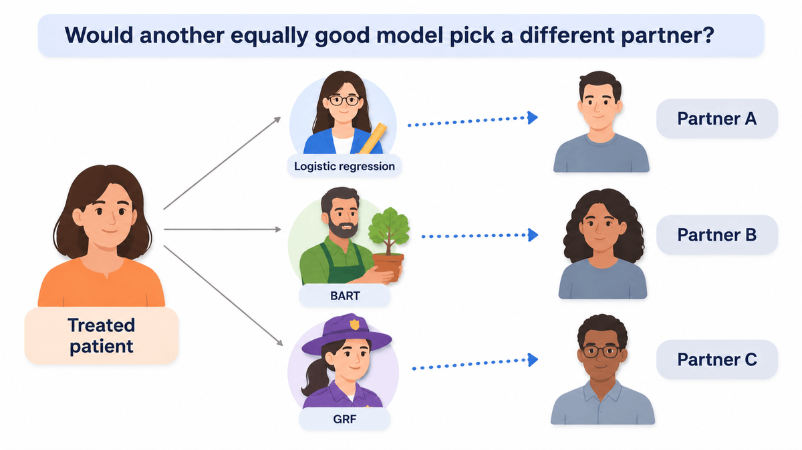
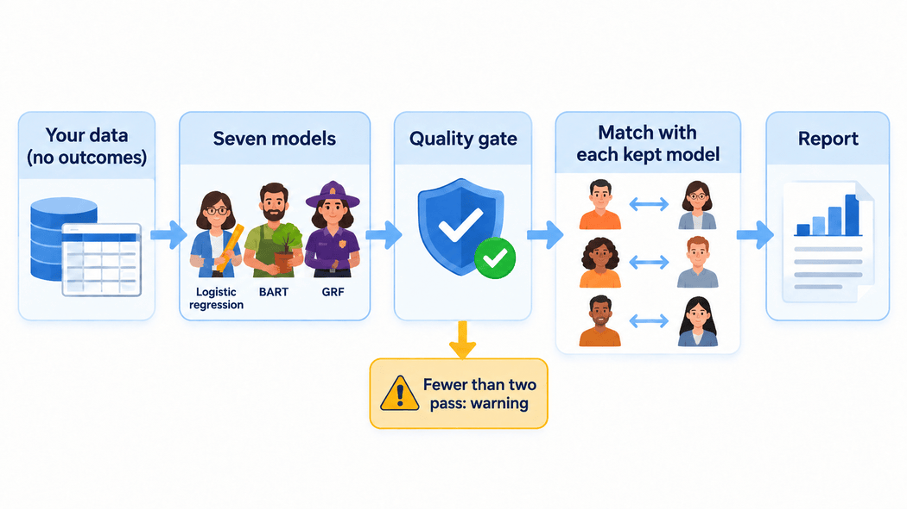

propsens in one minute

| You give it | Your study data (patient characteristics and treatment, no outcomes)
and your matching settings, or your existing MatchIt
object. |
| It does | Fits seven propensity models, keeps those as good as the best (the quality gate), and repeats your matching with each kept model. |
| You get | The list of kept models; rank disagreement (how much patients’ positions move between kept models); pair instability (how often kept models choose different partners); the balance of each model’s match; a clear warning if fewer than two models pass. |
| You use it to | (1) Report it next to your balance table, at the design stage, before looking at outcomes. (2) If the warning appears, revisit the matching design first. (3) If disagreement is noticeable, report the effect estimate under each kept model as a sensitivity analysis, as in the heart catheterization example. |
# Your study data and your matching settings:
propensity_sensitivity(treated ~ age + sex + diabetes, data = study_data,
replace = FALSE, caliper = 0.2)
# Or your existing MatchIt object (its matching settings are read from the object):
propensity_sensitivity(matched)The question
A matched study pairs each treated patient with an untreated patient who looked alike before treatment. To find those look-alikes, the researcher first estimates each patient’s chance of being treated with a statistical model, the propensity model. Several models can do this job equally well. propsens asks:
Would another, equally good propensity model have matched the same patients?

It answers this before anyone looks at the outcomes, so it belongs in the design stage of a study, next to the usual table that compares the matched groups.
What you run
One function call on the study’s data, or on the researcher’s existing matched design:
library(propsens)
result <- propensity_sensitivity(matched_design) # a MatchIt object, or a formula and data
result
What you get
- Kept models. propsens fits seven propensity models and keeps only those that fit the data and balance the matched groups about as well as the best one.
- Rank disagreement. How much the kept models disagree on the order in which they line up the treated patients by their chance of treatment. 0 means they all agree.
- Pair instability. How often the kept models choose a different untreated partner for the same treated patient.
- A warning at the top of the output if fewer than two models pass the quality check. The numbers are then outside the setting in which the method was evaluated.
How to read it: the heart catheterization example
The public data of a well-known study of right heart catheterization in critically ill patients (Connors et al., JAMA 1996) has 5,735 patients, 2,184 of them catheterized.
- 4 of 7 models were kept: logistic regression and the three BART fits.
- Rank disagreement was 0.047. A typical treated patient’s place in the line-up moved by about 5 percentile points across the kept models.
- The effect estimate moved too. Matching with each kept model gave odds ratios of death within 30 days from 1.27 to 1.38. All four point the same way; the size of the estimate depends on which equally good model was used. (propsens itself never uses the outcome; the odds ratios are shown only to illustrate what the disagreement means.)

What it does not tell you
- It describes the study as a whole. It does not single out individual patients.
- It does not say which model is right. It says how much the choice among good models matters.
- It does not address unmeasured confounding. Every model uses the same recorded characteristics; a factor that was never recorded is missing from all of them.
- With a caliper (a maximum allowed distance between partners), each model keeps a different set of treated patients, so each matched design describes a slightly different group.
Learn more
How propsens works, step by step explains each part of the method with the same example.